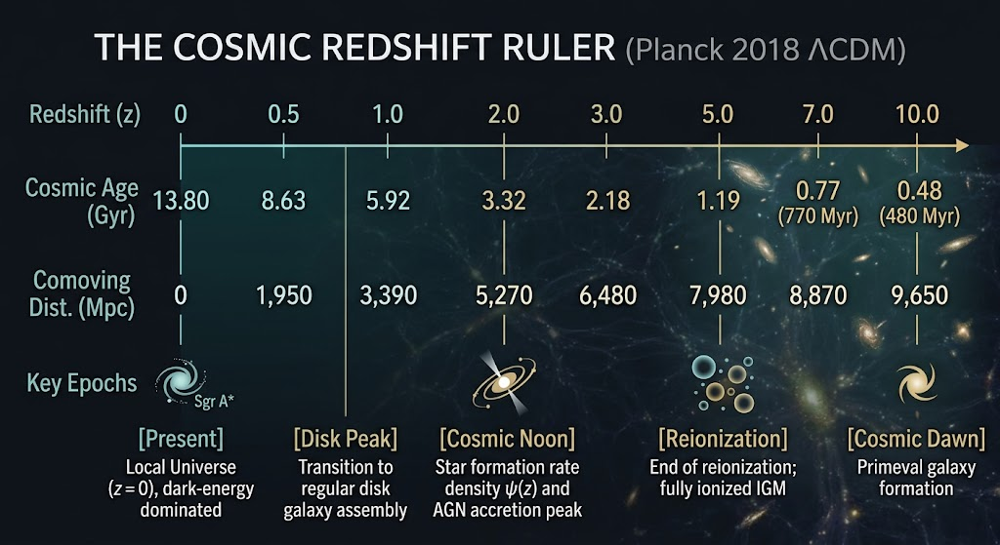
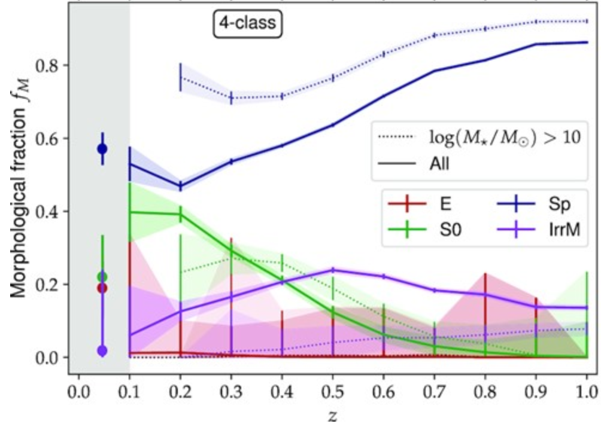
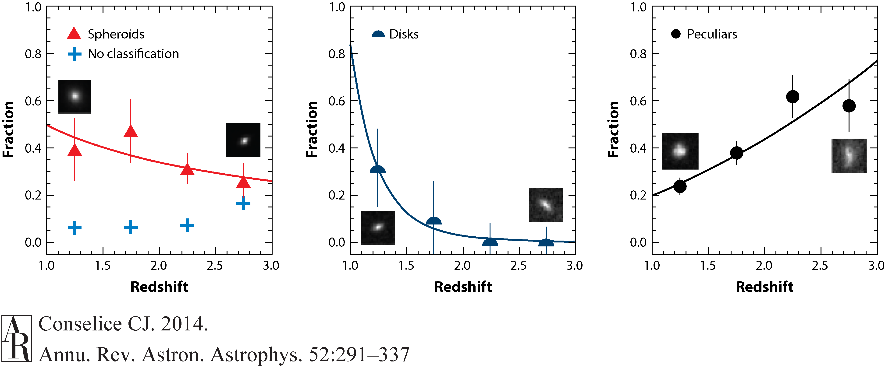
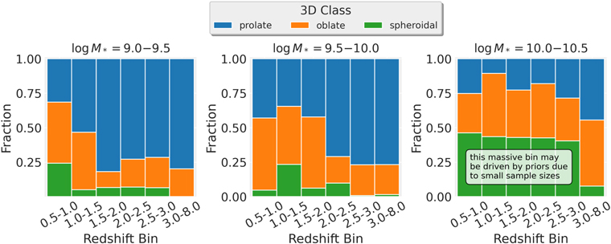
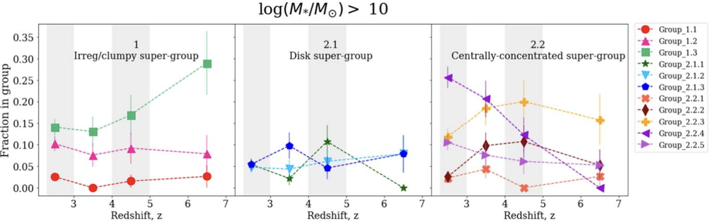
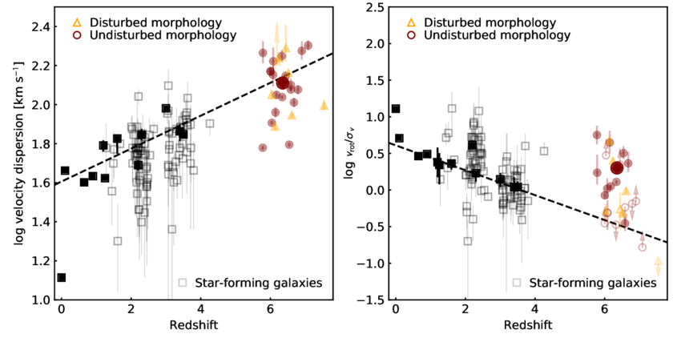
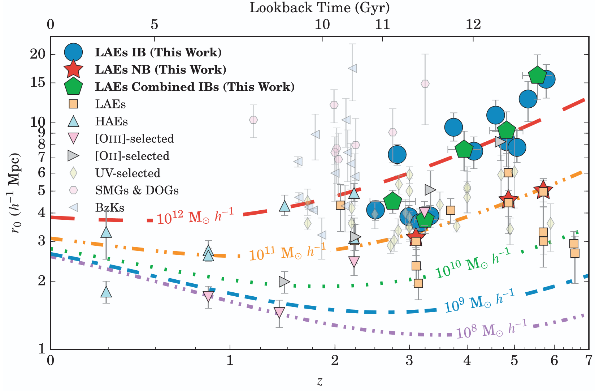
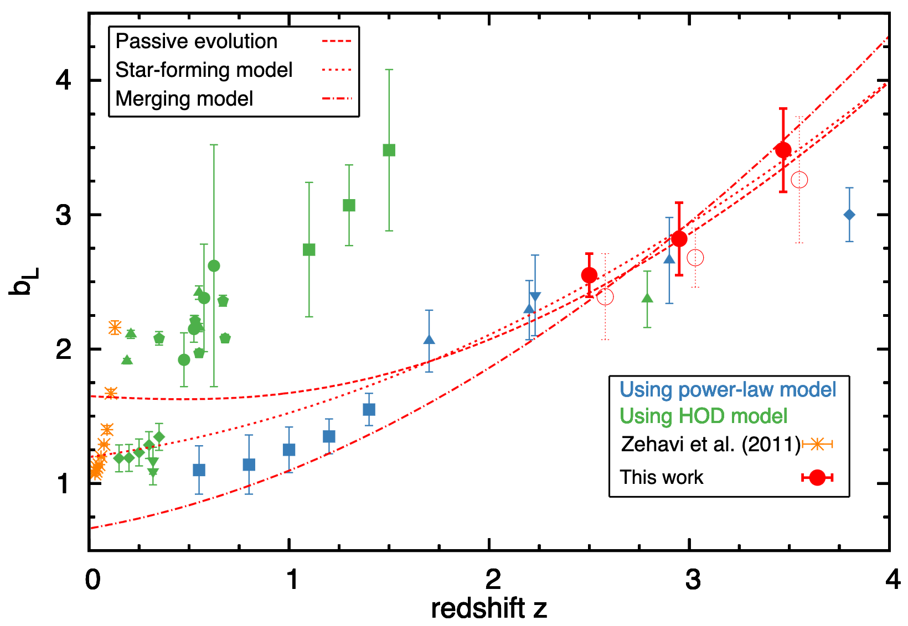

# The Evolutionary Path of Galaxies - <span class="fragment">We have some idea now of what galaxies look like in general:</span> - <span class="fragment">Their main **types** (elliptical, spiral, irregular)</span> - <span class="fragment">Their **observable characteristics** (colour, surface brightness, star formation, velocities, etc)</span> - <span class="fragment">The fundamental **connections** between their derived properties (mass-luminosity-velocity, etc)</span> -v- # The Evolutionary Path of Galaxies - <span class="fragment">But we have only really talked about these properties in the **local universe**</span> - <span class="fragment">Fundamentally, the further we observe in distance, the further back in **time** we measure</span> - <span class="fragment">By measuring changes between the distant/early and the local/current universe we observe **galaxy evolution**</span> --- <ul class="contents-list"> <li><a href="#/part-1"><strong>Part 1:</strong> The expanding universe</a></li> <li><a href="#/part-2"><strong>Part 2:</strong> Changes in galaxy properties with z</a></li> <li><a href="#/part-3"><strong>Part 3:</strong> Transforming galaxies through mergers</a></li> <li><a href="#/part-4"><strong>Part 4:</strong> Take-away messages</a></li> <li><a href="#/part-5"><strong>Part 5:</strong> Additional resources</a></li> </ul> --- <h2 id="part-1" class="slide-part-title">Part 1: The expanding universe</h2> ## Hubble's law - <span class="fragment">The more distant a galaxy, the more redshifted its light, $v = H_0 d$ - **Hubble's law**</span> - <span class="fragment">We frequently distance directly through **redshift z**, where $ z = \frac{\lambda_{\rm obs}-\lambda_{\rm rest}}{\lambda_{\rm rest}} \sim \frac{H_0 r}{c}$</span> - <span class="fragment">The age of a galaxy at a given redshift can be given by: $$t(z) \sim \frac{t_H}{1 + z}$$ where $t_H$ is the Hubble time ($H_0^{-1} \sim 14$Gyr).</span> - <span class="fragment">NB these formula assumes a _constant expansion_... which is only correct for the local universe!</span> -v- ## Hubble's law <div style="text-align: center; width: 100%;"><p></p></div> -v- ## Redshift observations <div style="text-align: center; width: 100%;"><img src="slide_data/slide_images/sdss_redshift_map.jpg" class="r-stretch" /></div> - <span class="fragment">Many surveys map galaxies positions & redshifts</span> - <span class="fragment">Beyond $z \gtrsim 3$, optical light is redshifted into NIR ($\lambda > 1.2\mu m$)</span> - <span class="fragment">This is inaccessible from ground-based surveys, necessitating space-based IR observations (e.g. JWST)</span> -v- ## The early universe - <span class="fragment">**A denser environment** ($\rho_m \propto (1+z)^3$):</span> - <span class="fragment">Universe had $\sim 1000\times$ matter density $\rho_m$ at $z \sim 9$ than today.</span> - <span class="fragment">The result is that the density (or _close-pair frequency_) of galaxies is much higher</span> - <span class="fragment">Shorter **Dynamical Timescales** ($\tau_{\text{dyn}} \propto H(z)^{-1}$): Higher mass density drives shorter free-fall & orbital timescales.</span> - <span class="fragment">**Gas Dominance** ($f_{\text{gas}}$): High-$z$ systems were gas-rich ($f_{\text{gas}} \ge 50\text{--}80$\%), compared to modern stellar-dominated disks and dusty nebulae ($f_{\text{gas}} \lesssim 10\text{--}20$%).</span> <!--, driving elevated merger rates ($\Gamma \propto (1+z)^{2\text{--}3}$). [+]--> --- <h2 id="part-2" class="slide-part-title">Part 2: Changes in galaxy properties with z</h2> <div style="text-align: center; width: 100%;"><img src="slide_data/slide_images/galaxy_morphology_evolution.png" class="r-stretch" /></div> -v- ## Morphological Evolution with time <div style="text-align: center; width: 100%;"><p></p></div> - <span class="fragment">The Hubble Sequence Epoch (z≲1.5):</span> - <span class="fragment">Well-defined disk and elliptical sequences dominate the local universe (z<1).</span> - <span class="fragment">Lenticular (S0) fraction drops from ∼50% in local clusters to <10% at z>1.</span> -v- ## Morphological Evolution with time <div style="text-align: center; width: 100%;"><p></p></div> - <span class="fragment">The Clumpy Disk & Irregular Era (z∼1.5→3):</span> - <span class="fragment">Peculiar/Irregular morphologies dominate (>40% of population).</span> - <span class="fragment">Disks are clumpy and turbulent, dominated by giant star-forming complexes ($M_{\rm clump} \sim10^8 – 10^9 M_\odot$).</span> -v- ## Morphological Evolution with time <div style="text-align: center; width: 100%;"><p></p></div> - <span class="fragment">The JWST Frontier (z∼3→8+):</span> - <span class="fragment">Prolate/Elongated Geometries: Low-mass galaxies at z>3 are [intrinsically prolate](https://iopscience.iop.org/article/10.3847/1538-4357/ad1a13/meta) ("cigar/banana" shaped), not flat 2D disks.</span> - <span class="fragment">Early Disks & Bars: JWST reveals regular, rotating disks and stellar bars pushing back to z∼3–5.</span> -v- ## Sérsic Index (n) Evolution: <div style="text-align: center; width: 100%;"><img src="slide_data/slide_images/Sersic_Index_evolution.png" class="r-stretch" /></div> - <span class="fragment">Spheroid profile shapes shift from n≈2 at z∼2 to classic n≈4 (R1/4) profiles locally.</span> - <span class="fragment">Driven by continuous central mass accumulation and subsequent dry merger envelope growth.</span> -v- ## Structural CAS Parameters <div style="text-align: center; width: 100%;"><img src="slide_data/slide_images/CAS_evolution_time.jpg" class="r-stretch" /></div> - <span class="fragment">CAS System Evolution across Redshift:</span> - <span class="fragment">**Concentration** (C): High-density central cores (C>3.5) decrease systematically beyond z>1.5.</span> - <span class="fragment">**Asymmetry** (A): Mean asymmetry increases with redshift (A>0.35 at z∼2), driven by high merger rates and clumpy geometries.</span> - <span class="fragment">**Smoothness** (S): Galaxies become increasingly clumpier at high redshift due to internal gravitational instabilities.</span> -v- ## Structural Unsupervised Parameters <div style="text-align: center; width: 100%;"><p></p></div> - <span class="fragment">An [unsupervised machine learning approach](https://iopscience.iop.org/article/10.3847/1538-4357/ad17b8/pdf) on JWST data sees a similar trend</span> -v- ## Mass-Size Evolution (z∼0→5) <div style="text-align: center; width: 100%;"><img src="slide_data/slide_images/mass_size_evolution.jpg" class="r-stretch" /></div> - <span class="fragment">Mass–Size Evolution ($R_e \propto (1+z)^{-\alpha}$):</span> - <span class="fragment">Radius of distant ellipticals appears far smaller ($R_e$ shrinks with $\alpha \approx 1.2\text{--}1.5$)</span> - <span class="fragment">At fixed mass ($10^{11}M_\odot$), ellipticals at $z\sim2$ are 3–5× smaller than local counterparts.</span> - <span class="fragment">Disk Galaxies show less extreme size growth ($\alpha\approx0.7\text{--}1.0$).</span> -v- ## The "Red Nugget" Phase (z∼0→5) <div style="text-align: center; width: 100%;"><img src="slide_data/slide_images/NGC_1277_viewed_by_Hubble.jpg" class="r-stretch" /></div> - <span class="fragment">Ultra-compact passive spheroids found, especially in $1<z<4$ range.</span> - <span class="fragment">Characterized by tiny effective radii ($R_e \sim 1$kpc), high densities ($\rho_e\sim10^{10}M_\odot$ kpc$^{−3}$), and high dispersions ($\sigma\sim300$ km s$^{−1}$).</span> - <span class="fragment">Represent the undisturbed, surviving inner cores of modern giant ellipticals.</span> -v- ## Kinematic Changes (z∼0→4) <div style="text-align: center; width: 100%;"><p></p></div> - <span class="fragment">Typically measured in intrinsic velocity dispersions and $V/\sigma$ ratio.</span> -v- ## Kinematic Changes (z∼0→4) - <span class="fragment">Kinematic State Transition ($V/\sigma$ Ratio):</span> - <span class="fragment">At z>2, discs appear turbulent - high intrinsic velocity dispersions ($σ_g \sim 40\text{--}90$ km s$^{−1}$) and low rotational support ($V/\sigma \sim 1\text{--}3$).</span> - <span class="fragment">Disk Settling Phase (z∼1.5→0): Gas dispersion drops ($\sigma_g → 10\text{--}20$ km s$^{−1}$); ordered rotation takes over ($V/\sigma>10$).</span> - <span class="fragment">**Kinematic Misalignments** are also frequently observed at $z>1.5$ - gas & stellar components show different velocities due to counter-rotatation.</span> -v- ## Spatial Clustering & Galaxy Bias (z∼0→6) <div style="text-align: center; width: 100%;"><img src="slide_data/slide_images/Portrait_of_a_galaxy_cluster.jpg" class="r-stretch" /></div> - <span class="fragment">*Spatial Clustering Length* ($r_0$):</span> - <span class="fragment">Galaxies are inherently clustered at all distances.</span> - <span class="fragment">$r_0$ refers to a threshold inside of which you are $>2\times$ as likely to find another galaxy compared to pure randomness</span> -v- ## Spatial Clustering & Galaxy Bias (z∼0→6) <div style="text-align: center; width: 100%;"><p></p></div> - <span class="fragment">Passive, compact spheroids display larger co-moving correlation lengths ($r_0 \sim 10\text{--}15\text{ h}^{-1}\text{Mpc}$) than low-mass spirals.</span> -v- ## Spatial Clustering & Galaxy Bias (z∼0→6) <div style="text-align: center; width: 100%;"><p></p></div> - <span class="fragment">*Galaxy Bias Evolution*:</span> - <span class="fragment">Defined as the ratio in overdensity rate of galaxies to dark matter: $b(z) \equiv \delta_{\text{gal}} / \delta_{\text{DM}}$</span> - <span class="fragment">Galaxy bias increases strongly with redshift (($b(z) \propto (1+z)^{1.5}$ for massive spheroids).</span> Note: - <span class="fragment">At $z \sim 2\text{--}3$, massive ellipticals inhabit rare, highly dense dark matter halo peaks ($M_{\text{halo}} > 10^{13} M_\odot$).</span> --- <h2 id="part-3" class="slide-part-title">Part 3: Transforming galaxies through mergers</h2> <div style="text-align: center; width: 100%;"><img src="slide_data/slide_images/HST_galaxy_mergers.jpg" class="r-stretch" /></div> -v- ## Merger terminology - <span class="fragment">Gas-rich: **Wet mergers**</span> - <span class="fragment">High cold gas content ($f_{\text{gas}} \gtrsim 20\text{--}80\%$).</span> - <span class="fragment">Hydrodynamic gas shocks drive strong energy dissipation, channeling gas to the galaxy center.</span> - <span class="fragment">Gas-poor: **Dry mergers**</span> - <span class="fragment">Low cold gas content ($f_{\text{gas}} \lesssim 10\%$).</span> - <span class="fragment">Dissipationless, collisionless stellar dynamics governed purely by gravitational interactions</span> -v- ## Building the Core: Gas-Rich "Wet" Mergers (z>1.5) - <span class="fragment">Violent Dissipative Collisions:</span> - <span class="fragment">Equal-mass gas-rich major mergers at high redshift drive gas orbital decay into the central potential well.</span> - <span class="fragment">Creates an ultra-dense central stellar core with high Sérsic index ($n \ge 4$).</span> - <span class="fragment">Formation of Compact Spheroids:</span> - <span class="fragment">Directly produces the z∼2–5 "red nugget" population in a single rapid collapse event.</span> - <span class="fragment">Alternativelty, high gas fractions at z>2 could cause disks to undergo *internal* gravitational collapse, migrating giant clumps inward to build central bulges without major mergers.</span> -v- ## Expanding the Envelope: Gas-Poor "Dry" Minor Mergers (z<1.5) - <span class="fragment">*Satellite Accretion Mechanics*:</span> - <span class="fragment">Low-mass, gas-poor satellite galaxies ($M_1/M_2 < 1/10$) are stripped and destroyed at large radii ($r>R_e$) due to weak tidal binding.</span> - <span class="fragment">Deposited stellar material builds extended outer halos without penetrating or heating the central core.</span> - <span class="fragment">Dry mergers inflate physical size with minimal mass addition ($R_e \propto M_*^2$), expanding $z \sim 2$ compact red nuggets into giant, extended local ellipticals ($R_e \sim 10\text{--}50\text{ kpc}$).</span> -v- ## Environmental Structural Transformations (z<1) - <span class="fragment">Dense cluster environments can also transform galaxies:</span> - <span class="fragment">**Ram-Pressure Stripping**: Intracluster gas pressure removes interstellar gas from infalling spirals, halting star formation while preserving disk structure.</span> - <span class="fragment">**Strangulation / Starvation**: Removes outer halo gas reservoirs, preventing future disk regrowth.</span> - <span class="fragment">**Galaxy Harassment**: High-speed tidal encounters in dense clusters dynamically heat thin disks into thick, featureless S0s or dEs.</span> - <span class="fragment">These explain the structural shift in clusters from blue spirals at z∼1 to passive lenticulars/S0s at z∼0.</span> - <span class="fragment">Also creates Dwarf Ellipticals</span> <!-- -v- ## Structural Evolution Flowchart [i=schematic_galaxy_evolution_EN.jpg]--> --- <h2 id="part-4" class="slide-part-title">Part 4: Take-away messages</h2> - *The early universe was a fundamentally different place* - Galaxies were: - Smaller, bluer, clumpier, more turbulent, more prolate, many mergers, etc. - The "cosmic noon" of star formation, followed by quenching (see next lecture), shaped our current universe. --- <h2 id="part-5" class="slide-part-title">Part 5: Additional resources</h2> ["The Evolution of Galaxy Structure Over Cosmic Time" (2014)](https://www.annualreviews.org/content/journals/10.1146/annurev-astro-081913-040037) [Astroteaching resources](https://astroteaching.github.io/galaxies/) <!-- ["Observational Structural Trends ($z \sim 0 \to 3$)"] # 1) Color-Magnitude distribution The Bimodal Color-Magnitude Distribution: The separation between the blue cloud (star-forming disks), the red sequence (passive ellipticals), and the green valley. [Blue galaxies tend to live in low-mass haloes - as seen in simulations](https://www.nature.com/articles/s41550-021-01404-1) --- # 2) Quenching [Review paper](https://www.annualreviews.org/content/journals/10.1146/annurev-astro-043024-121502) triaxial spheroid = sausage/disc/sphere; denser cores - de Vaucouleurs profile --- # 3) Collisions "Wet" and "Dry" collisions (gas or not) --- Concentration Assymetry Clumpiness [i=CAS_evolution_time.jpg]-->